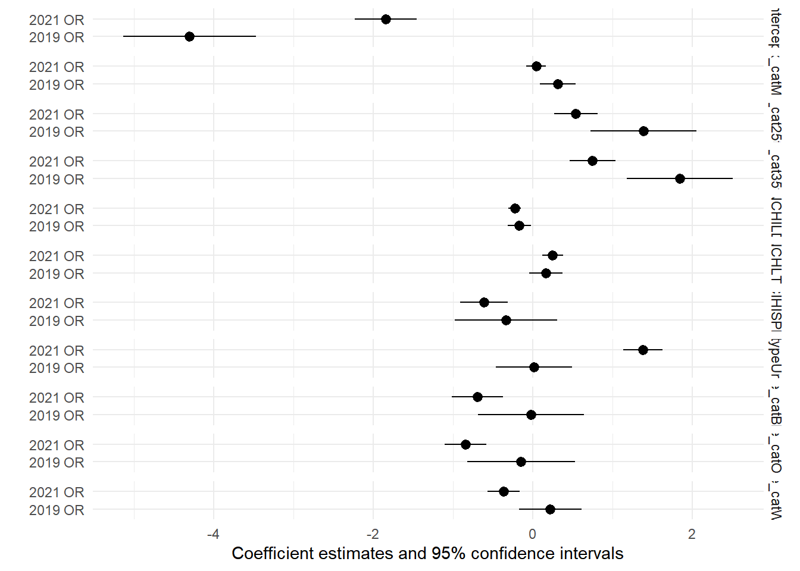
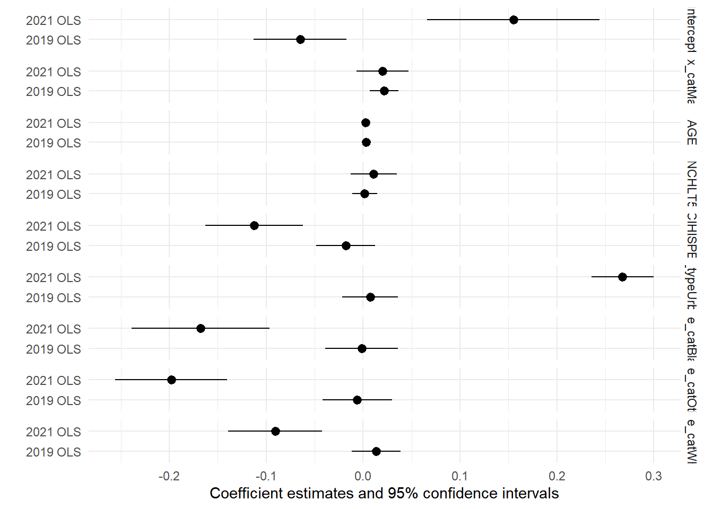

library(scales)
library(reldist)
library(pollster)
library(labelled)
library(weights)
library(tigris)
library(ipumsr)
library(srvyr)
library(survey)
library(tidyverse)
library(naniar)
library(gmodels)
library(gtsummary)
library(quarto)
library(huxtable) # for summ() and regression output formatting
library(jtools)
library(modelsummary)
library(car)
knitr::opts_chunk$set(warning=FALSE, message=FALSE)
load("./data/WFH.RData")5 Models for Paper
Work From Home: Who Can and Who Does?
6 Regression Models
Regression for 2019 using survey object dstrata2019 & regression for 2021 using survey object dstrata2021.
6.1 Gender and Kids Model: Subsetting survey data
6.1.1 Logit Model
Model created with a subset of survey data. Only uses workers who had Management type occupations, Could feasibly WFH, and were under the ages of 45.
dstrata <- survey::svydesign(id = ~CLUSTER, strata = ~STRATA, weights = ~PERWT, data = joined) %>%
as_survey() %>%
mutate(decile = ntile(INCEARN, 10))
# 2019 data turned into survey item
dstrata2019 <- joined %>% filter(YEAR==2019)
dstrata2019 <- survey::svydesign(id = ~CLUSTER, strata = ~STRATA,
weights = ~PERWT, data = dstrata2019) %>%
as_survey() %>%
mutate(decile = ntile(INCEARN, 10))
dstrata2021 <- joined %>% filter(YEAR==2021)
dstrata2021 <- survey::svydesign(id = ~CLUSTER, strata = ~STRATA, weights = ~PERWT, data = dstrata2021) %>% as_survey() %>%
mutate(decile = ntile(INCEARN, 10))
both <- svyglm(did_wfh~ INCEARN + race_cat + sex_cat + age_cat + factor(CIHISPEED) + county_pop_type + NCHILD + NCHLT5 + factor(YEAR),
subset = AGE < 45 & CanWorkFromHome == "Can WFH" & occ_2dig_labels == "Management, Business, Science, Arts",
family = quasibinomial(), design = dstrata)
# summary(both)
OR.CI_Both <- cbind("AOR" = exp( coef(both)),
exp(confint(both,
df.resid=degf(both$survey.design))))[-1,]
t1 <- both %>%
tbl_regression(intercept = T,
# Use style_number to round to 2 digits (e.g., 1.27)
estimate_fun = function(x) style_number(x, digits = 2),
# Use style_sigfig to keep 2 significant digits (e.g., 1.3)
# estimate_fun = function(x) style_sigfig(x, digits = 2),
label = list('(Intercept)' ~ "Intercept")
) %>%
modify_column_hide(p.value) %>%
modify_caption("Both Survey Years Together - Logit Model")
t2 <- both %>%
tbl_regression(intercept = F, # No intercept in OR table
exponentiate = T, # OR = exp(B)
# Use style_number to round to 2 digits (e.g., 1.27)
estimate_fun = function(x) style_number(x, digits = 2),
# Use style_sigfig to keep 2 significant digits (e.g., 1.3)
pvalue_fun = function(x) style_pvalue(x, digits = 3),
# label = list(
# AGE ~ "Age (years)",
# )
) %>%
add_global_p(keep = T, test.statistic = "F")
tbl_merge(
tbls = list(t1, t2),
tab_spanner = c("**Regression Coefficients**", "**Adjusted Odds Ratio**")
)| Characteristic | Regression Coefficients | Adjusted Odds Ratio | |||
|---|---|---|---|---|---|
| log(OR)1 | 95% CI1 | OR1 | 95% CI1 | p-value | |
| Intercept | -3.88 | -4.26, -3.49 | |||
| Total personal earned income | 0.00 | 0.00, 0.00 | 1.00 | 1.00, 1.00 | <0.001 |
| race_cat | <0.001 | ||||
| Asian | — | — | — | — | |
| Black | -0.48 | -0.77, -0.20 | 0.62 | 0.46, 0.82 | <0.001 |
| Other | -0.64 | -0.88, -0.40 | 0.53 | 0.42, 0.67 | <0.001 |
| White | -0.21 | -0.38, -0.05 | 0.81 | 0.68, 0.96 | 0.013 |
| sex_cat | 0.498 | ||||
| Female | — | — | — | — | |
| Male | 0.04 | -0.07, 0.15 | 1.04 | 0.93, 1.16 | 0.498 |
| age_cat | <0.001 | ||||
| 16to24 | — | — | — | — | |
| 25to34 | 0.54 | 0.30, 0.78 | 1.72 | 1.35, 2.19 | <0.001 |
| 35to44 | 0.74 | 0.48, 0.99 | 2.09 | 1.61, 2.70 | <0.001 |
| factor(CIHISPEED) | <0.001 | ||||
| 10 | — | — | — | — | |
| 20 | -0.51 | -0.79, -0.23 | 0.60 | 0.46, 0.79 | <0.001 |
| county_pop_type | <0.001 | ||||
| Rural Counties | — | — | — | — | |
| Urban Counties | 0.97 | 0.72, 1.23 | 2.65 | 2.05, 3.42 | <0.001 |
| Number of own children in the household | -0.22 | -0.29, -0.15 | 0.80 | 0.75, 0.86 | <0.001 |
| Number of own children under age 5 in household | 0.22 | 0.10, 0.33 | 1.24 | 1.11, 1.39 | <0.001 |
| factor(YEAR) | <0.001 | ||||
| 2019 | — | — | — | — | |
| 2021 | 2.09 | 1.94, 2.23 | 8.06 | 6.98, 9.31 | <0.001 |
| 1 OR = Odds Ratio, CI = Confidence Interval | |||||
A note on the p-value: the p-value is a test of significance for the null hypothesis H0 that
- there is no difference in the log-odds of the outcome between the reference group (captured by the intercept) and the explanatory variable (or one of its categories), or that the difference between the two groups equals zero: H0:b1=0 and Ha:b1≠0
If p<0.5, we reject H0 as we have evidence to suggest that the difference between the two groups does not equal zero.
Log-odds are not the most intuitive to interpret. Instead of discussing the change in the log-odds, we can calculate the odds ratio for a given variable by exponentiating the coefficient.
Odds ratio is read “have x times the odds of the outcome of interest compared to those in the reference group”.
Reference group of the outcome variable: by default, R creates uses the lowest coded group as the reference. The reference category can be changed by using the ‘relevel()’.
Relationship between Odds and Probabilities:
Odds=P/(1-P) P=odds/(1+odds) Odds=exp(log-odds) P=exp(log-odds)/(1+exp(log-odds))
both <- svyglm(did_wfh~ sex_cat*factor(YEAR)+ age_cat*factor(YEAR) + NCHILD*factor(YEAR) + NCHLT5*factor(YEAR)+factor(CIHISPEED)*factor(YEAR) + county_pop_type*factor(YEAR) +race_cat*factor(YEAR),
subset = AGE < 45 & CanWorkFromHome == "Can WFH" & occ_2dig_labels == "Management, Business, Science, Arts",
family = quasibinomial(), design = dstrata)
OR.CI_Both <- cbind("AOR" = exp( coef(both)),
exp(confint(both,
df.resid=degf(both$survey.design))))[-1,]
t1 <- both %>%
tbl_regression(intercept = T,
# Use style_number to round to 2 digits (e.g., 1.27)
estimate_fun = function(x) style_number(x, digits = 2),
# Use style_sigfig to keep 2 significant digits (e.g., 1.3)
# estimate_fun = function(x) style_sigfig(x, digits = 2)
) %>%
modify_column_hide(p.value) %>%
modify_caption("Both years together with Interactions - Logit Model")
t2 <- both %>%
tbl_regression(intercept = F, # No intercept in OR table
exponentiate = T, # OR = exp(B)
# Use style_number to round to 2 digits (e.g., 1.27)
estimate_fun = function(x) style_number(x, digits = 2),
# Use style_sigfig to keep 2 significant digits (e.g., 1.3)
pvalue_fun = function(x) style_pvalue(x, digits = 3)
) %>%
add_global_p(keep = T, test.statistic = "F")
tbl_merge(
tbls = list(t1, t2),
tab_spanner = c("**Regression Coefficients**", "**Adjusted Odds Ratio**")
)| Characteristic | Regression Coefficients | Adjusted Odds Ratio | |||
|---|---|---|---|---|---|
| log(OR)1 | 95% CI1 | OR1 | 95% CI1 | p-value | |
| (Intercept) | -4.30 | -5.13, -3.47 | |||
| sex_cat | 0.005 | ||||
| Female | — | — | — | — | |
| Male | 0.32 | 0.09, 0.54 | 1.37 | 1.10, 1.71 | 0.005 |
| factor(YEAR) | <0.001 | ||||
| 2019 | — | — | — | — | |
| 2021 | 2.46 | 1.55, 3.38 | 11.74 | 4.69, 29.41 | <0.001 |
| age_cat | <0.001 | ||||
| 16to24 | — | — | — | — | |
| 25to34 | 1.39 | 0.73, 2.05 | 4.01 | 2.07, 7.78 | <0.001 |
| 35to44 | 1.85 | 1.18, 2.51 | 6.34 | 3.26, 12.33 | <0.001 |
| Number of own children in the household | -0.17 | -0.31, -0.02 | 0.85 | 0.73, 0.98 | 0.024 |
| Number of own children under age 5 in household | 0.17 | -0.04, 0.38 | 1.18 | 0.96, 1.46 | 0.121 |
| factor(CIHISPEED) | 0.308 | ||||
| 10 | — | — | — | — | |
| 20 | -0.33 | -0.98, 0.31 | 0.72 | 0.38, 1.36 | 0.308 |
| county_pop_type | 0.940 | ||||
| Rural Counties | — | — | — | — | |
| Urban Counties | 0.02 | -0.46, 0.50 | 1.02 | 0.63, 1.64 | 0.940 |
| race_cat | 0.403 | ||||
| Asian | — | — | — | — | |
| Black | -0.02 | -0.68, 0.65 | 0.98 | 0.51, 1.91 | 0.958 |
| Other | -0.14 | -0.82, 0.53 | 0.87 | 0.44, 1.70 | 0.675 |
| White | 0.22 | -0.17, 0.61 | 1.25 | 0.84, 1.84 | 0.270 |
| sex_cat * factor(YEAR) | 0.035 | ||||
| Male * 2021 | -0.27 | -0.52, -0.02 | 0.76 | 0.59, 0.98 | 0.035 |
| factor(YEAR) * age_cat | 0.008 | ||||
| 2021 * 25to34 | -0.85 | -1.56, -0.13 | 0.43 | 0.21, 0.88 | 0.020 |
| 2021 * 35to44 | -1.10 | -1.82, -0.37 | 0.33 | 0.16, 0.69 | 0.003 |
| factor(YEAR) * Number of own children in the household | 0.480 | ||||
| 2021 * Number of own children in the household | -0.06 | -0.22, 0.11 | 0.94 | 0.80, 1.11 | 0.480 |
| factor(YEAR) * Number of own children under age 5 in household | 0.504 | ||||
| 2021 * Number of own children under age 5 in household | 0.08 | -0.16, 0.33 | 1.09 | 0.85, 1.39 | 0.504 |
| factor(YEAR) * factor(CIHISPEED) | 0.449 | ||||
| 2021 * 20 | -0.27 | -0.99, 0.44 | 0.76 | 0.37, 1.55 | 0.449 |
| factor(YEAR) * county_pop_type | <0.001 | ||||
| 2021 * Urban Counties | 1.37 | 0.83, 1.91 | 3.92 | 2.28, 6.72 | <0.001 |
| factor(YEAR) * race_cat | 0.062 | ||||
| 2021 * Black | -0.67 | -1.41, 0.06 | 0.51 | 0.24, 1.06 | 0.073 |
| 2021 * Other | -0.70 | -1.42, 0.03 | 0.50 | 0.24, 1.03 | 0.060 |
| 2021 * White | -0.58 | -1.02, -0.14 | 0.56 | 0.36, 0.87 | 0.009 |
| 1 OR = Odds Ratio, CI = Confidence Interval | |||||
modelsummary(both, exponentiate = TRUE, # does standard and exponentiated models together
statistic = c("conf.int",
"s.e. = {std.error}",
"p = {p.value}"),
stars = TRUE, shape = term ~ statistic,
notes = list('Subset of ACS Survey Data for 2019 and 2021',
'Odds Ratios Shown in Table'),
title = 'Predictions for WFH in 2019 vs 2021')| Est. | 2.5 % | 97.5 % | s.e. = S.E. | p = p | |
|---|---|---|---|---|---|
| (Intercept) | 0.014*** | 0.006 | 0.031 | s.e. = 0.006 | p = <0.001 |
| sex_catMale | 1.372** | 1.099 | 1.713 | s.e. = 0.155 | p = 0.005 |
| factor(YEAR)2021 | 11.742*** | 4.688 | 29.410 | s.e. = 5.500 | p = <0.001 |
| age_cat25to34 | 4.011*** | 2.068 | 7.779 | s.e. = 1.355 | p = <0.001 |
| age_cat35to44 | 6.336*** | 3.257 | 12.328 | s.e. = 2.151 | p = <0.001 |
| NCHILD | 0.847* | 0.733 | 0.978 | s.e. = 0.062 | p = 0.024 |
| NCHLT5 | 1.181 | 0.957 | 1.458 | s.e. = 0.127 | p = 0.121 |
| factor(CIHISPEED)20 | 0.715 | 0.376 | 1.363 | s.e. = 0.235 | p = 0.308 |
| county_pop_typeUrban Counties | 1.019 | 0.631 | 1.645 | s.e. = 0.249 | p = 0.940 |
| race_catBlack | 0.982 | 0.506 | 1.907 | s.e. = 0.332 | p = 0.958 |
| race_catOther | 0.865 | 0.440 | 1.703 | s.e. = 0.299 | p = 0.675 |
| race_catWhite | 1.246 | 0.843 | 1.842 | s.e. = 0.248 | p = 0.270 |
| sex_catMale × factor(YEAR)2021 | 0.762* | 0.592 | 0.981 | s.e. = 0.098 | p = 0.035 |
| factor(YEAR)2021 × age_cat25to34 | 0.428* | 0.209 | 0.877 | s.e. = 0.157 | p = 0.020 |
| factor(YEAR)2021 × age_cat35to44 | 0.334** | 0.162 | 0.689 | s.e. = 0.123 | p = 0.003 |
| factor(YEAR)2021 × NCHILD | 0.942 | 0.799 | 1.111 | s.e. = 0.079 | p = 0.480 |
| factor(YEAR)2021 × NCHLT5 | 1.088 | 0.850 | 1.393 | s.e. = 0.137 | p = 0.504 |
| factor(YEAR)2021 × factor(CIHISPEED)20 | 0.760 | 0.373 | 1.546 | s.e. = 0.275 | p = 0.449 |
| factor(YEAR)2021 × county_pop_typeUrban Counties | 3.917*** | 2.282 | 6.722 | s.e. = 1.079 | p = <0.001 |
| factor(YEAR)2021 × race_catBlack | 0.510+ | 0.244 | 1.065 | s.e. = 0.192 | p = 0.073 |
| factor(YEAR)2021 × race_catOther | 0.499+ | 0.241 | 1.031 | s.e. = 0.185 | p = 0.060 |
| factor(YEAR)2021 × race_catWhite | 0.559** | 0.360 | 0.867 | s.e. = 0.125 | p = 0.009 |
| + p < 0.1, * p < 0.05, ** p < 0.01, *** p < 0.001 | |||||
| Subset of ACS Survey Data for 2019 and 2021 | |||||
| Odds Ratios Shown in Table |
library(flextable)
m <- list(
"2019 OR" = svyglm(did_wfh~ sex_cat + age_cat + NCHILD + NCHLT5 + factor(CIHISPEED) + county_pop_type +race_cat,
subset = AGE < 45 & CanWorkFromHome == "Can WFH" & occ_2dig_labels == "Management, Business, Science, Arts",
family = quasibinomial(),
design = dstrata2019),
"2021 OR" = svyglm(did_wfh~ sex_cat+ age_cat + NCHILD + NCHLT5 + factor(CIHISPEED) + county_pop_type +race_cat,
subset = AGE < 45 & CanWorkFromHome == "Can WFH" & occ_2dig_labels == "Management, Business, Science, Arts",
family = quasibinomial(),
design = dstrata2021)
)
#
# modelsummary(m, exponentiate = TRUE, # does standard and exponentiated models together
# statistic = c("conf.int",
# "s.e. = {std.error}",
# "p = {p.value}"),
# stars = TRUE, shape = term ~ model + statistic,
# notes = list('Subset of ACS Survey Data for 2019 and 2021',
# 'Odds Ratios Shown in Table'),
# title = 'Predictions for WFH in 2019 vs 2021',
# output = "table.docx")
modelsummary(m, exponentiate = TRUE, # does standard and exponentiated models together
statistic = c("conf.int",
"s.e. = {std.error}",
"p = {p.value}"),
stars = TRUE, shape = term ~ model + statistic,
notes = list('Subset of ACS Survey Data for 2019 and 2021',
'Odds Ratios Shown in Table'),
title = 'Predictions for WFH in 2019 vs 2021')| Est. | 2.5 % | 97.5 % | s.e. = S.E. | p = p | Est. | 2.5 % | 97.5 % | s.e. = S.E. | p = p | |
|---|---|---|---|---|---|---|---|---|---|---|
| (Intercept) | 0.014*** | 0.006 | 0.031 | s.e. = 0.006 | p = <0.001 | 0.159*** | 0.108 | 0.234 | s.e. = 0.031 | p = <0.001 |
| sex_catMale | 1.372** | 1.099 | 1.713 | s.e. = 0.155 | p = 0.005 | 1.045 | 0.926 | 1.180 | s.e. = 0.065 | p = 0.476 |
| age_cat25to34 | 4.011*** | 2.068 | 7.779 | s.e. = 1.355 | p = <0.001 | 1.719*** | 1.307 | 2.260 | s.e. = 0.240 | p = <0.001 |
| age_cat35to44 | 6.336*** | 3.256 | 12.329 | s.e. = 2.151 | p = <0.001 | 2.115*** | 1.586 | 2.820 | s.e. = 0.310 | p = <0.001 |
| NCHILD | 0.847* | 0.733 | 0.978 | s.e. = 0.062 | p = 0.024 | 0.798*** | 0.738 | 0.863 | s.e. = 0.032 | p = <0.001 |
| NCHLT5 | 1.181 | 0.957 | 1.458 | s.e. = 0.127 | p = 0.121 | 1.285*** | 1.130 | 1.462 | s.e. = 0.085 | p = <0.001 |
| factor(CIHISPEED)20 | 0.715 | 0.376 | 1.363 | s.e. = 0.235 | p = 0.308 | 0.544*** | 0.403 | 0.733 | s.e. = 0.083 | p = <0.001 |
| county_pop_typeUrban Counties | 1.019 | 0.631 | 1.645 | s.e. = 0.249 | p = 0.940 | 3.989*** | 3.110 | 5.118 | s.e. = 0.507 | p = <0.001 |
| race_catBlack | 0.982 | 0.506 | 1.907 | s.e. = 0.332 | p = 0.958 | 0.501*** | 0.363 | 0.690 | s.e. = 0.082 | p = <0.001 |
| race_catOther | 0.865 | 0.440 | 1.703 | s.e. = 0.299 | p = 0.675 | 0.432*** | 0.333 | 0.560 | s.e. = 0.057 | p = <0.001 |
| race_catWhite | 1.246 | 0.843 | 1.842 | s.e. = 0.248 | p = 0.270 | 0.696*** | 0.570 | 0.851 | s.e. = 0.071 | p = <0.001 |
| Num.Obs. | 7344 | 7389 | ||||||||
| R2 | 0.024 | 0.049 | ||||||||
| R2 Adj. | −0.155 | −0.114 | ||||||||
| AIC | 3783.8 | 9246.9 | ||||||||
| BIC | 3851.7 | 9319.8 | ||||||||
| Log.Lik. | −1872.464 | −4606.447 | ||||||||
| RMSE | 0.25 | 0.47 | ||||||||
| + p < 0.1, * p < 0.05, ** p < 0.01, *** p < 0.001 | ||||||||||
| Subset of ACS Survey Data for 2019 and 2021 | ||||||||||
| Odds Ratios Shown in Table |
modelplot(m, facet=TRUE)
m4_2019 <- svyglm(did_wfh~ sex_cat+ age_cat + NCHILD + NCHLT5 + factor(CIHISPEED) + county_pop_type+INCEARN +race_cat,
subset = AGE < 45 & CanWorkFromHome == "Can WFH" & occ_2dig_labels == "Management, Business, Science, Arts",
family = quasibinomial(),
design = dstrata2019)
m4_2021 <- svyglm(did_wfh~ sex_cat+ age_cat + NCHILD + NCHLT5 + factor(CIHISPEED) + county_pop_type+INCEARN +race_cat,
subset = AGE < 45 & CanWorkFromHome == "Can WFH" & occ_2dig_labels == "Management, Business, Science, Arts",
family = quasibinomial(),
design = dstrata2021)
export_summs(m4_2019, m4_2021, model.names = c("Subset 2019 Logit", " Subset 2021 Logit"))| Subset 2019 Logit | Subset 2021 Logit | |
| (Intercept) | -4.30 *** | -1.81 *** |
| (0.42) | (0.20) | |
| sex_catMale | 0.32 ** | -0.05 |
| (0.12) | (0.06) | |
| age_cat25to34 | 1.40 *** | 0.39 ** |
| (0.34) | (0.14) | |
| age_cat35to44 | 1.86 *** | 0.51 *** |
| (0.34) | (0.15) | |
| NCHILD | -0.17 * | -0.23 *** |
| (0.07) | (0.04) | |
| NCHLT5 | 0.17 | 0.22 ** |
| (0.11) | (0.07) | |
| factor(CIHISPEED)20 | -0.34 | -0.56 *** |
| (0.33) | (0.15) | |
| county_pop_typeUrban Counties | 0.03 | 1.28 *** |
| (0.25) | (0.13) | |
| INCEARN | -0.00 | 0.00 *** |
| (0.00) | (0.00) | |
| race_catBlack | -0.03 | -0.63 *** |
| (0.34) | (0.16) | |
| race_catOther | -0.15 | -0.78 *** |
| (0.34) | (0.13) | |
| race_catWhite | 0.22 | -0.36 *** |
| (0.20) | (0.10) | |
| N | 7344 | 7389 |
| R2 | ||
| *** p < 0.001; ** p < 0.01; * p < 0.05. | ||
6.1.2 OLS Model
m <- list(
"2019 OLS" = svyglm(did_wfh~ sex_cat + AGE + NCHLT5 + factor(CIHISPEED) + county_pop_type +race_cat,
subset = AGE < 45 & CanWorkFromHome == "Can WFH" & occ_2dig_labels == "Management, Business, Science, Arts",
design = dstrata2019),
"2021 OLS" = svyglm(did_wfh ~ sex_cat+ AGE + NCHLT5 + factor(CIHISPEED) + county_pop_type +race_cat,
subset = AGE < 45 & CanWorkFromHome == "Can WFH" & occ_2dig_labels == "Management, Business, Science, Arts",
design = dstrata2021)
)
#
# modelsummary(m, exponentiate = TRUE, # does standard and exponentiated models together
# statistic = c("conf.int",
# "s.e. = {std.error}",
# "p = {p.value}"),
# stars = TRUE, shape = term ~ model + statistic,
# notes = list('Subset of ACS Survey Data for 2019 and 2021',
# 'Odds Ratios Shown in Table'),
# title = 'Predictions for WFH in 2019 vs 2021',
# output = "table.docx")
modelsummary(m,# exponentiate = TRUE, # does standard and exponentiated models together
statistic = c("conf.int",
"s.e. = {std.error}",
"p = {p.value}"),
stars = TRUE, shape = term ~ model + statistic,
notes = list('Subset of ACS Survey Data for 2019 and 2021'),
title = 'OLS - Separate Models for WFH in 2019 vs 2021')| Est. | 2.5 % | 97.5 % | s.e. = S.E. | p = p | Est. | 2.5 % | 97.5 % | s.e. = S.E. | p = p | |
|---|---|---|---|---|---|---|---|---|---|---|
| (Intercept) | −0.065** | −0.113 | −0.017 | s.e. = 0.024 | p = 0.008 | 0.155*** | 0.066 | 0.244 | s.e. = 0.046 | p = <0.001 |
| sex_catMale | 0.022** | 0.007 | 0.036 | s.e. = 0.008 | p = 0.004 | 0.020 | −0.006 | 0.047 | s.e. = 0.014 | p = 0.138 |
| AGE | 0.003*** | 0.002 | 0.004 | s.e. = 0.001 | p = <0.001 | 0.002* | 0.000 | 0.004 | s.e. = 0.001 | p = 0.028 |
| NCHLT5 | 0.002 | −0.011 | 0.015 | s.e. = 0.007 | p = 0.796 | 0.011 | −0.013 | 0.035 | s.e. = 0.012 | p = 0.364 |
| factor(CIHISPEED)20 | −0.018 | −0.048 | 0.013 | s.e. = 0.016 | p = 0.250 | −0.112*** | −0.163 | −0.062 | s.e. = 0.026 | p = <0.001 |
| county_pop_typeUrban Counties | 0.008 | −0.021 | 0.036 | s.e. = 0.015 | p = 0.609 | 0.268*** | 0.236 | 0.300 | s.e. = 0.016 | p = <0.001 |
| race_catBlack | −0.001 | −0.039 | 0.036 | s.e. = 0.019 | p = 0.942 | −0.168*** | −0.239 | −0.097 | s.e. = 0.036 | p = <0.001 |
| race_catOther | −0.006 | −0.042 | 0.030 | s.e. = 0.018 | p = 0.748 | −0.198*** | −0.256 | −0.140 | s.e. = 0.029 | p = <0.001 |
| race_catWhite | 0.014 | −0.011 | 0.039 | s.e. = 0.013 | p = 0.285 | −0.091*** | −0.139 | −0.042 | s.e. = 0.025 | p = <0.001 |
| Num.Obs. | 7566 | 7645 | ||||||||
| R2 | 0.011 | 0.050 | ||||||||
| R2 Adj. | −0.175 | −0.116 | ||||||||
| AIC | 14094.4 | 45627.8 | ||||||||
| BIC | 207869.1 | 57795.7 | ||||||||
| Log.Lik. | −103889.882 | −28853.127 | ||||||||
| RMSE | 0.25 | 0.47 | ||||||||
| + p < 0.1, * p < 0.05, ** p < 0.01, *** p < 0.001 | ||||||||||
| Subset of ACS Survey Data for 2019 and 2021 |

#|column: page
m4_2019 <- svyglm(did_wfh ~ sex_cat+ AGE + NCHLT5 + factor(CIHISPEED) + county_pop_type+INCEARN +race_cat,
subset = AGE < 45 & CanWorkFromHome == "Can WFH" & occ_2dig_labels == "Management, Business, Science, Arts",
design = dstrata2019)
m4_2021 <- svyglm(did_wfh ~ sex_cat+ AGE + NCHLT5 + factor(CIHISPEED) + county_pop_type+INCEARN +race_cat,
subset = AGE < 45 & CanWorkFromHome == "Can WFH" & occ_2dig_labels == "Management, Business, Science, Arts",
design = dstrata2021)
export_summs(m4_2019, m4_2021, model.names = c("Subset 2019 OLS", " Subset 2021 OLS"))| Subset 2019 OLS | Subset 2021 OLS | |
| (Intercept) | -0.07 ** | 0.21 *** |
| (0.03) | (0.05) | |
| sex_catMale | 0.02 ** | -0.00 |
| (0.01) | (0.01) | |
| AGE | 0.00 *** | -0.00 |
| (0.00) | (0.00) | |
| NCHLT5 | 0.00 | 0.00 |
| (0.01) | (0.01) | |
| factor(CIHISPEED)20 | -0.02 | -0.10 *** |
| (0.02) | (0.03) | |
| county_pop_typeUrban Counties | 0.01 | 0.24 *** |
| (0.01) | (0.02) | |
| INCEARN | -0.00 | 0.00 *** |
| (0.00) | (0.00) | |
| race_catBlack | -0.00 | -0.15 *** |
| (0.02) | (0.04) | |
| race_catOther | -0.01 | -0.18 *** |
| (0.02) | (0.03) | |
| race_catWhite | 0.01 | -0.09 *** |
| (0.01) | (0.02) | |
| N | 7566 | 7645 |
| R2 | 0.01 | 0.06 |
| *** p < 0.001; ** p < 0.01; * p < 0.05. | ||
t1 <- m4_2019 %>%
tbl_regression(intercept = T,
# Use style_number to round to 2 digits (e.g., 1.27)
estimate_fun = function(x) style_number(x, digits = 2),
pvalue_fun = function(x) style_pvalue(x, digits = 3)
) %>%
add_global_p(keep = T, test.statistic = "F")
t2 <- m4_2021 %>%
tbl_regression(intercept = T, # No intercept in OR table
# Use style_number to round to 2 digits (e.g., 1.27)
estimate_fun = function(x) style_number(x, digits = 2),
# Use style_sigfig to keep 2 significant digits (e.g., 1.3)
pvalue_fun = function(x) style_pvalue(x, digits = 3)
) %>%
add_global_p(keep = T, test.statistic = "F")
tbl_merge(
tbls = list(t1, t2),
tab_spanner = c("**OLS 2019 Subset**", "**OLS 2021 Subset**")
)| Characteristic | OLS 2019 Subset | OLS 2021 Subset | ||||
|---|---|---|---|---|---|---|
| Beta | 95% CI1 | p-value | Beta | 95% CI1 | p-value | |
| (Intercept) | -0.07 | -0.12, -0.02 | 0.008 | 0.21 | 0.12, 0.30 | <0.001 |
| sex_cat | 0.004 | 0.984 | ||||
| Female | — | — | — | — | ||
| Male | 0.02 | 0.01, 0.04 | 0.004 | 0.00 | -0.03, 0.03 | 0.984 |
| Age | 0.00 | 0.00, 0.00 | <0.001 | 0.00 | 0.00, 0.00 | 0.845 |
| Number of own children under age 5 in household | 0.00 | -0.01, 0.02 | 0.757 | 0.00 | -0.02, 0.02 | 0.941 |
| factor(CIHISPEED) | 0.241 | <0.001 | ||||
| 10 | — | — | — | — | ||
| 20 | -0.02 | -0.05, 0.01 | 0.241 | -0.10 | -0.15, -0.05 | <0.001 |
| county_pop_type | 0.570 | <0.001 | ||||
| Rural Counties | — | — | — | — | ||
| Urban Counties | 0.01 | -0.02, 0.04 | 0.570 | 0.24 | 0.21, 0.28 | <0.001 |
| Total personal earned income | 0.00 | 0.00, 0.00 | 0.430 | 0.00 | 0.00, 0.00 | <0.001 |
| race_cat | 0.363 | <0.001 | ||||
| Asian | — | — | — | — | ||
| Black | 0.00 | -0.04, 0.03 | 0.895 | -0.15 | -0.22, -0.08 | <0.001 |
| Other | -0.01 | -0.04, 0.03 | 0.709 | -0.18 | -0.24, -0.12 | <0.001 |
| White | 0.01 | -0.01, 0.04 | 0.299 | -0.09 | -0.14, -0.04 | <0.001 |
| 1 CI = Confidence Interval | ||||||
6.2 Models with both years together
6.2.1 OLS
both <- svyglm(did_wfh~ CanWorkFromHome+county_pop_type+ NCHILD + NCHLT5 +
INCEARN +race_cat+ sex_cat + age_cat + CIHISPEED +
occ_2dig_labels + factor(YEAR), design = dstrata)
ols2021 <- svyglm(did_wfh~ CanWorkFromHome+county_pop_type+ NCHILD + NCHLT5 +
INCEARN +race_cat+ sex_cat + age_cat + CIHISPEED +
occ_2dig_labels, design = dstrata2021)
summary(ols2021)
Call:
svyglm(formula = did_wfh ~ CanWorkFromHome + county_pop_type +
NCHILD + NCHLT5 + INCEARN + race_cat + sex_cat + age_cat +
CIHISPEED + occ_2dig_labels, design = dstrata2021)
Survey design:
Called via srvyr
Coefficients:
Estimate Std. Error t value
(Intercept) 2.686e-01 1.480e-02 18.154
CanWorkFromHomeNo WFH -1.729e-01 6.169e-03 -28.027
CanWorkFromHomeSome WFH -3.493e-03 8.254e-03 -0.423
county_pop_typeUrban Counties 8.313e-02 5.126e-03 16.217
NCHILD -1.308e-02 2.385e-03 -5.482
NCHLT5 2.172e-02 6.614e-03 3.284
INCEARN 4.987e-07 3.673e-08 13.577
race_catBlack -4.165e-02 1.208e-02 -3.446
race_catOther -5.583e-02 1.091e-02 -5.119
race_catWhite -2.621e-02 1.011e-02 -2.593
sex_catMale -1.473e-02 4.442e-03 -3.317
age_cat25to34 4.491e-02 7.654e-03 5.868
age_cat35to44 5.243e-02 8.047e-03 6.515
age_cat45to54 2.769e-02 7.826e-03 3.538
age_cat55to64 1.292e-02 7.547e-03 1.712
age_cat65+ 2.953e-02 9.874e-03 2.990
CIHISPEED -3.788e-03 5.505e-04 -6.880
occ_2dig_labelsMilitary -4.541e-02 3.749e-02 -1.211
occ_2dig_labelsNatural Resources, Construction -5.842e-02 7.979e-03 -7.321
occ_2dig_labelsProduction, Transportation -6.040e-02 6.813e-03 -8.866
occ_2dig_labelsSales & Office Jobs -2.410e-02 6.747e-03 -3.572
occ_2dig_labelsService Occupations -5.528e-02 6.880e-03 -8.034
Pr(>|t|)
(Intercept) < 2e-16 ***
CanWorkFromHomeNo WFH < 2e-16 ***
CanWorkFromHomeSome WFH 0.672172
county_pop_typeUrban Counties < 2e-16 ***
NCHILD 4.25e-08 ***
NCHLT5 0.001024 **
INCEARN < 2e-16 ***
race_catBlack 0.000569 ***
race_catOther 3.09e-07 ***
race_catWhite 0.009519 **
sex_catMale 0.000911 ***
age_cat25to34 4.46e-09 ***
age_cat35to44 7.36e-11 ***
age_cat45to54 0.000404 ***
age_cat55to64 0.086856 .
age_cat65+ 0.002788 **
CIHISPEED 6.09e-12 ***
occ_2dig_labelsMilitary 0.225805
occ_2dig_labelsNatural Resources, Construction 2.51e-13 ***
occ_2dig_labelsProduction, Transportation < 2e-16 ***
occ_2dig_labelsSales & Office Jobs 0.000354 ***
occ_2dig_labelsService Occupations 9.71e-16 ***
---
Signif. codes: 0 '***' 0.001 '**' 0.01 '*' 0.05 '.' 0.1 ' ' 1
(Dispersion parameter for gaussian family taken to be 0.1367503)
Number of Fisher Scoring iterations: 2export_summs(both, ols2021, model.names = c("Both Years OLS", " Only 2021 OLS"))| Both Years OLS | Only 2021 OLS | |
| (Intercept) | 0.08 *** | 0.27 *** |
| (0.01) | (0.01) | |
| CanWorkFromHomeNo WFH | -0.10 *** | -0.17 *** |
| (0.00) | (0.01) | |
| CanWorkFromHomeSome WFH | 0.00 | -0.00 |
| (0.00) | (0.01) | |
| county_pop_typeUrban Counties | 0.05 *** | 0.08 *** |
| (0.00) | (0.01) | |
| NCHILD | -0.01 *** | -0.01 *** |
| (0.00) | (0.00) | |
| NCHLT5 | 0.02 *** | 0.02 ** |
| (0.00) | (0.01) | |
| INCEARN | 0.00 *** | 0.00 *** |
| (0.00) | (0.00) | |
| race_catBlack | -0.03 *** | -0.04 *** |
| (0.01) | (0.01) | |
| race_catOther | -0.04 *** | -0.06 *** |
| (0.01) | (0.01) | |
| race_catWhite | -0.01 | -0.03 ** |
| (0.01) | (0.01) | |
| sex_catMale | -0.01 * | -0.01 *** |
| (0.00) | (0.00) | |
| age_cat25to34 | 0.03 *** | 0.04 *** |
| (0.00) | (0.01) | |
| age_cat35to44 | 0.04 *** | 0.05 *** |
| (0.00) | (0.01) | |
| age_cat45to54 | 0.03 *** | 0.03 *** |
| (0.00) | (0.01) | |
| age_cat55to64 | 0.03 *** | 0.01 |
| (0.00) | (0.01) | |
| age_cat65+ | 0.04 *** | 0.03 ** |
| (0.01) | (0.01) | |
| CIHISPEED | -0.00 *** | -0.00 *** |
| (0.00) | (0.00) | |
| occ_2dig_labelsMilitary | -0.04 ** | -0.05 |
| (0.02) | (0.04) | |
| occ_2dig_labelsNatural Resources, Construction | -0.03 *** | -0.06 *** |
| (0.01) | (0.01) | |
| occ_2dig_labelsProduction, Transportation | -0.04 *** | -0.06 *** |
| (0.00) | (0.01) | |
| occ_2dig_labelsSales & Office Jobs | -0.01 ** | -0.02 *** |
| (0.00) | (0.01) | |
| occ_2dig_labelsService Occupations | -0.02 *** | -0.06 *** |
| (0.00) | (0.01) | |
| factor(YEAR)2021 | 0.14 *** | |
| (0.00) | ||
| N | 109132 | 53982 |
| R2 | 0.11 | 0.12 |
| *** p < 0.001; ** p < 0.01; * p < 0.05. | ||
t1 <- both %>%
tbl_regression(intercept = T,
# Use style_number to round to 2 digits (e.g., 1.27)
estimate_fun = function(x) style_number(x, digits = 2),
pvalue_fun = function(x) style_pvalue(x, digits = 3)
) %>%
add_global_p(keep = T, test.statistic = "F")
t2 <- ols2021 %>%
tbl_regression(intercept = T, # No intercept in OR table
# Use style_number to round to 2 digits (e.g., 1.27)
estimate_fun = function(x) style_number(x, digits = 2),
# Use style_sigfig to keep 2 significant digits (e.g., 1.3)
pvalue_fun = function(x) style_pvalue(x, digits = 3)
) %>%
add_global_p(keep = T, test.statistic = "F")
tbl_merge(
tbls = list(t2),
tab_spanner = c("**OLS 2021 Full Model**")
)| Characteristic | OLS 2021 Full Model | ||
|---|---|---|---|
| Beta | 95% CI1 | p-value | |
| (Intercept) | 0.27 | 0.24, 0.30 | <0.001 |
| CanWorkFromHome | <0.001 | ||
| Can WFH | — | — | |
| No WFH | -0.17 | -0.18, -0.16 | <0.001 |
| Some WFH | 0.00 | -0.02, 0.01 | 0.672 |
| county_pop_type | <0.001 | ||
| Rural Counties | — | — | |
| Urban Counties | 0.08 | 0.07, 0.09 | <0.001 |
| Number of own children in the household | -0.01 | -0.02, -0.01 | <0.001 |
| Number of own children under age 5 in household | 0.02 | 0.01, 0.03 | 0.001 |
| Total personal earned income | 0.00 | 0.00, 0.00 | <0.001 |
| race_cat | <0.001 | ||
| Asian | — | — | |
| Black | -0.04 | -0.07, -0.02 | <0.001 |
| Other | -0.06 | -0.08, -0.03 | <0.001 |
| White | -0.03 | -0.05, -0.01 | 0.010 |
| sex_cat | <0.001 | ||
| Female | — | — | |
| Male | -0.01 | -0.02, -0.01 | <0.001 |
| age_cat | <0.001 | ||
| 16to24 | — | — | |
| 25to34 | 0.04 | 0.03, 0.06 | <0.001 |
| 35to44 | 0.05 | 0.04, 0.07 | <0.001 |
| 45to54 | 0.03 | 0.01, 0.04 | <0.001 |
| 55to64 | 0.01 | 0.00, 0.03 | 0.087 |
| 65+ | 0.03 | 0.01, 0.05 | 0.003 |
| Broadband (high speed) Internet service such as cable, fiber optic, or DSL service | 0.00 | 0.00, 0.00 | <0.001 |
| occ_2dig_labels | <0.001 | ||
| Management, Business, Science, Arts | — | — | |
| Military | -0.05 | -0.12, 0.03 | 0.226 |
| Natural Resources, Construction | -0.06 | -0.07, -0.04 | <0.001 |
| Production, Transportation | -0.06 | -0.07, -0.05 | <0.001 |
| Sales & Office Jobs | -0.02 | -0.04, -0.01 | <0.001 |
| Service Occupations | -0.06 | -0.07, -0.04 | <0.001 |
| 1 CI = Confidence Interval | |||
6.2.2 Logit
both <- svyglm(did_wfh ~ CanWorkFromHome + occ_2dig_labels + factor(YEAR) +
county_pop_type+ NCHILD + NCHLT5 + INCEARN +race_cat+ sex_cat
+ age_cat,
family = quasibinomial(), design = dstrata)
OR.CI_Both <- cbind("AOR" = exp( coef(both)),
exp(confint(both,
df.resid=degf(both$survey.design))))[-1,]
#round(OR.CI_2019, 3)
t1 <- both %>%
tbl_regression(intercept = T,
# Use style_number to round to 2 digits (e.g., 1.27)
estimate_fun = function(x) style_number(x, digits = 2)) %>%
modify_column_hide(p.value) %>%
modify_caption("Logit - 2019 & 2021 ACS Data Together")
t2 <- both %>%
tbl_regression(intercept = F, # No intercept in OR table
exponentiate = T, # OR = exp(B)
# Use style_number to round to 2 digits (e.g., 1.27)
estimate_fun = function(x) style_number(x, digits = 2),
# Use style_sigfig to keep 2 significant digits (e.g., 1.3)
pvalue_fun = function(x) style_pvalue(x, digits = 3)) %>%
add_global_p(keep = T, test.statistic = "F")
tbl_merge(
tbls = list(t1, t2),
tab_spanner = c("**Regression Coefficients**", "**Adjusted Odds Ratio**")
)| Characteristic | Regression Coefficients | Adjusted Odds Ratio | |||
|---|---|---|---|---|---|
| log(OR)1 | 95% CI1 | OR1 | 95% CI1 | p-value | |
| (Intercept) | -3.40 | -3.58, -3.22 | |||
| CanWorkFromHome | <0.001 | ||||
| Can WFH | — | — | — | — | |
| No WFH | -0.99 | -1.07, -0.92 | 0.37 | 0.34, 0.40 | <0.001 |
| Some WFH | 0.01 | -0.05, 0.07 | 1.01 | 0.95, 1.08 | 0.758 |
| occ_2dig_labels | <0.001 | ||||
| Management, Business, Science, Arts | — | — | — | — | |
| Military | -1.00 | -2.06, 0.06 | 0.37 | 0.13, 1.06 | 0.065 |
| Natural Resources, Construction | -0.59 | -0.76, -0.41 | 0.56 | 0.47, 0.66 | <0.001 |
| Production, Transportation | -0.85 | -0.99, -0.71 | 0.43 | 0.37, 0.49 | <0.001 |
| Sales & Office Jobs | -0.09 | -0.16, -0.03 | 0.91 | 0.85, 0.97 | 0.007 |
| Service Occupations | -0.41 | -0.53, -0.30 | 0.66 | 0.59, 0.74 | <0.001 |
| factor(YEAR) | <0.001 | ||||
| 2019 | — | — | — | — | |
| 2021 | 1.53 | 1.47, 1.60 | 4.64 | 4.36, 4.94 | <0.001 |
| county_pop_type | <0.001 | ||||
| Rural Counties | — | — | — | — | |
| Urban Counties | 0.59 | 0.51, 0.68 | 1.81 | 1.66, 1.97 | <0.001 |
| Number of own children in the household | -0.06 | -0.09, -0.03 | 0.94 | 0.92, 0.97 | <0.001 |
| Number of own children under age 5 in household | 0.14 | 0.07, 0.20 | 1.15 | 1.07, 1.23 | <0.001 |
| Total personal earned income | 0.00 | 0.00, 0.00 | 1.00 | 1.00, 1.00 | <0.001 |
| race_cat | <0.001 | ||||
| Asian | — | — | — | — | |
| Black | -0.29 | -0.42, -0.16 | 0.75 | 0.66, 0.85 | <0.001 |
| Other | -0.40 | -0.53, -0.28 | 0.67 | 0.59, 0.75 | <0.001 |
| White | -0.06 | -0.16, 0.03 | 0.94 | 0.85, 1.03 | 0.185 |
| sex_cat | 0.013 | ||||
| Female | — | — | — | — | |
| Male | -0.06 | -0.11, -0.01 | 0.94 | 0.89, 0.99 | 0.013 |
| age_cat | <0.001 | ||||
| 16to24 | — | — | — | — | |
| 25to34 | 0.59 | 0.45, 0.73 | 1.81 | 1.58, 2.07 | <0.001 |
| 35to44 | 0.68 | 0.54, 0.82 | 1.98 | 1.72, 2.27 | <0.001 |
| 45to54 | 0.61 | 0.47, 0.75 | 1.84 | 1.60, 2.11 | <0.001 |
| 55to64 | 0.54 | 0.40, 0.67 | 1.71 | 1.49, 1.96 | <0.001 |
| 65+ | 0.69 | 0.54, 0.84 | 2.00 | 1.72, 2.32 | <0.001 |
| 1 OR = Odds Ratio, CI = Confidence Interval | |||||
log-odds to odds-ratio: exp(log-odds)
odds-ratio to %: (OR-1) * 100
6.3 Variation of Models - mostly ignore
Code
library(huxtable) # for summ() and regression output formatting
library(jtools)
library(modelsummary)
#svyglm(did_wfh~ INCEARN + race_cat+ SEX+ CIHISPEED+CINETHH + occ_2dig_labels+CanWorkFromHome+county_pop_type, design = dstrata2021) %>% summary()
### All variations of family = "" had same results
# m1_2019 <- svyglm(did_wfh~ INCEARN +race_cat+ SEX+ AGE + CIHISPEED*CINETHH + CanWorkFromHome+county_pop_type+NCHILD+MARST + NCHLT5,
# family = "binomial", design = dstrata2019)
#
# m1_2021<- svyglm(did_wfh~ INCEARN +race_cat+ SEX+ AGE + CIHISPEED*CINETHH + CanWorkFromHome+county_pop_type+NCHILD+MARST + NCHLT5,
# family = "binomial", design = dstrata2021)
#
# export_summs(m1_2019, m1_2021,
# model.names = c("2019 Logit", "2021 Logit"),
# robust = "HC3", statistics = c(N = "nobs", R2 = "r.squared", adjR2 = "adj.r.squared"))
#
#
# m1_2019 <- svyglm(did_wfh~ INCEARN +race_cat+ SEX+ AGE + CIHISPEED*CINETHH + CanWorkFromHome+county_pop_type+NCHILD+MARST + NCHLT5,
# family = quasibinomial(), design = dstrata2019)
#
# m1_2021<- svyglm(did_wfh~ INCEARN +race_cat+ SEX+ AGE + CIHISPEED*CINETHH + CanWorkFromHome+county_pop_type+NCHILD+MARST + NCHLT5,
# family=quasibinomial(), design = dstrata2021)
#
#
# export_summs(m1_2019, m1_2021,
# model.names = c("2019 QuasiBi", "2021 QuasiBi"),
# robust = "HC3", statistics = c(N = "nobs", R2 = "r.squared", adjR2 = "adj.r.squared"))
m1_2019 <- svyglm(did_wfh~ CanWorkFromHome + county_pop_type + NCHILD + NCHLT5 + occ_2dig_labels+ INCEARN + race_cat+ sex_cat+ age_cat,
family = quasibinomial(),design = dstrata2019)
m1_2021<- svyglm(did_wfh~ CanWorkFromHome + county_pop_type + NCHILD + NCHLT5 + occ_2dig_labels+ INCEARN + race_cat+ sex_cat+ age_cat,
family = quasibinomial(), design = dstrata2021)
export_summs(m1_2019, m1_2021,
model.names = c("2019 Logit", "2021 Logit"),
robust = "HC3", statistics = c(N = "nobs", R2 = "r.squared", adjR2 = "adj.r.squared"))| 2019 Logit | 2021 Logit | |
| (Intercept) | -3.86 *** | -1.78 *** |
| (0.19) | (0.11) | |
| CanWorkFromHomeNo WFH | -0.64 *** | -1.12 *** |
| (0.07) | (0.04) | |
| CanWorkFromHomeSome WFH | 0.07 | -0.02 |
| (0.07) | (0.04) | |
| county_pop_typeUrban Counties | 0.17 * | 0.78 *** |
| (0.07) | (0.05) | |
| NCHILD | 0.01 | -0.09 *** |
| (0.03) | (0.02) | |
| NCHLT5 | 0.13 * | 0.15 *** |
| (0.06) | (0.04) | |
| occ_2dig_labelsMilitary | -11.64 *** | -0.56 |
| (0.25) | (0.56) | |
| occ_2dig_labelsNatural Resources, Construction | -0.30 | -0.72 *** |
| (0.16) | (0.10) | |
| occ_2dig_labelsProduction, Transportation | -0.84 *** | -0.84 *** |
| (0.14) | (0.08) | |
| occ_2dig_labelsSales & Office Jobs | 0.03 | -0.14 *** |
| (0.07) | (0.04) | |
| occ_2dig_labelsService Occupations | 0.06 | -0.63 *** |
| (0.10) | (0.07) | |
| INCEARN | 0.00 | 0.00 *** |
| (0.00) | (0.00) | |
| race_catBlack | -0.36 * | -0.27 *** |
| (0.15) | (0.08) | |
| race_catOther | -0.48 ** | -0.42 *** |
| (0.17) | (0.07) | |
| race_catWhite | 0.17 | -0.14 * |
| (0.10) | (0.06) | |
| sex_catMale | 0.07 | -0.11 *** |
| (0.05) | (0.03) | |
| age_cat25to34 | 0.78 *** | 0.53 *** |
| (0.17) | (0.08) | |
| age_cat35to44 | 1.04 *** | 0.58 *** |
| (0.16) | (0.08) | |
| age_cat45to54 | 1.18 *** | 0.42 *** |
| (0.16) | (0.08) | |
| age_cat55to64 | 1.22 *** | 0.30 *** |
| (0.16) | (0.08) | |
| age_cat65+ | 1.51 *** | 0.39 *** |
| (0.16) | (0.09) | |
| N | 58226 | 56349 |
| R2 | ||
| Standard errors are heteroskedasticity robust. *** p < 0.001; ** p < 0.01; * p < 0.05. | ||
Code
OR.CI_2019 <- cbind("AOR" = exp( coef(m1_2019)),
exp(confint(m1_2019,
df.resid=degf(m1_2019$survey.design))))[-1,]
OR.CI_2021 <- cbind("AOR" = exp( coef(m1_2021)),
exp(confint(m1_2021,
df.resid=degf(m1_2021$survey.design))))[-1,]
library(gtsummary)
library(car)
t1 <- m1_2019 %>%
tbl_regression(intercept = T,
# Use style_number to round to 2 digits (e.g., 1.27)
estimate_fun = function(x) style_number(x, digits = 2),
) %>%
modify_column_hide(p.value) %>%
modify_caption("2019 vs 2021 ACS Data - Logit Models")
t2 <- m1_2019 %>%
tbl_regression(intercept = F, # No intercept in OR table
exponentiate = T, # OR = exp(B)
# Use style_number to round to 2 digits (e.g., 1.27)
estimate_fun = function(x) style_number(x, digits = 2),
# Use style_sigfig to keep 2 significant digits (e.g., 1.3)
pvalue_fun = function(x) style_pvalue(x, digits = 3),
) %>%
add_global_p(keep = T, test.statistic = "F")
# tbl_merge(
# tbls = list(t1, t2),
# tab_spanner = c("**2019 Regression Coefficients**", "** 2019 Adjusted Odds Ratio**")
# )
t3 <- m1_2021 %>%
tbl_regression(intercept = T,
# Use style_number to round to 2 digits (e.g., 1.27)
estimate_fun = function(x) style_number(x, digits = 2),
) %>%
modify_column_hide(p.value) %>%
modify_caption("2021 ACS")
t4 <- m1_2021 %>%
tbl_regression(intercept = F, # No intercept in OR table
exponentiate = T, # OR = exp(B)
# Use style_number to round to 2 digits (e.g., 1.27)
estimate_fun = function(x) style_number(x, digits = 2),
# Use style_sigfig to keep 2 significant digits (e.g., 1.3)
pvalue_fun = function(x) style_pvalue(x, digits = 3) ) %>%
add_global_p(keep = T, test.statistic = "F")
# tbl_merge(
# tbls = list(t3, t4),
# tab_spanner = c("**Regression Coefficients**", "**Adjusted Odds Ratio**")
# )
tbl_merge(
tbls = list(t1, t2, t3, t4),
tab_spanner = c("**2019 Regression Coefficients**", "**2019 Adjusted Odds Ratio**", "**2021 Regression Coefficients**", "**2021 Adjusted Odds Ratio**")
)| Characteristic | 2019 Regression Coefficients | 2019 Adjusted Odds Ratio | 2021 Regression Coefficients | 2021 Adjusted Odds Ratio | ||||||
|---|---|---|---|---|---|---|---|---|---|---|
| log(OR)1 | 95% CI1 | OR1 | 95% CI1 | p-value | log(OR)1 | 95% CI1 | OR1 | 95% CI1 | p-value | |
| (Intercept) | -3.86 | -4.24, -3.48 | -1.78 | -1.98, -1.57 | ||||||
| CanWorkFromHome | <0.001 | <0.001 | ||||||||
| Can WFH | — | — | — | — | — | — | — | — | ||
| No WFH | -0.64 | -0.79, -0.50 | 0.53 | 0.46, 0.61 | <0.001 | -1.12 | -1.21, -1.04 | 0.33 | 0.30, 0.35 | <0.001 |
| Some WFH | 0.07 | -0.06, 0.21 | 1.08 | 0.95, 1.23 | 0.264 | -0.02 | -0.09, 0.06 | 0.98 | 0.91, 1.06 | 0.690 |
| county_pop_type | 0.022 | <0.001 | ||||||||
| Rural Counties | — | — | — | — | — | — | — | — | ||
| Urban Counties | 0.17 | 0.02, 0.31 | 1.18 | 1.02, 1.37 | 0.022 | 0.78 | 0.68, 0.89 | 2.19 | 1.97, 2.43 | <0.001 |
| Number of own children in the household | 0.01 | -0.04, 0.07 | 1.01 | 0.96, 1.07 | 0.632 | -0.09 | -0.12, -0.05 | 0.92 | 0.89, 0.95 | <0.001 |
| Number of own children under age 5 in household | 0.13 | 0.00, 0.25 | 1.13 | 1.00, 1.29 | 0.048 | 0.15 | 0.06, 0.23 | 1.16 | 1.06, 1.26 | <0.001 |
| occ_2dig_labels | <0.001 | <0.001 | ||||||||
| Management, Business, Science, Arts | — | — | — | — | — | — | — | — | ||
| Military | -11.64 | -12.13, -11.16 | 0.00 | 0.00, 0.00 | <0.001 | -0.56 | -1.67, 0.54 | 0.57 | 0.19, 1.72 | 0.319 |
| Natural Resources, Construction | -0.30 | -0.61, 0.01 | 0.74 | 0.54, 1.01 | 0.061 | -0.72 | -0.93, -0.52 | 0.48 | 0.40, 0.59 | <0.001 |
| Production, Transportation | -0.84 | -1.12, -0.55 | 0.43 | 0.33, 0.57 | <0.001 | -0.84 | -1.00, -0.68 | 0.43 | 0.37, 0.51 | <0.001 |
| Sales & Office Jobs | 0.03 | -0.12, 0.17 | 1.03 | 0.89, 1.19 | 0.701 | -0.14 | -0.21, -0.06 | 0.87 | 0.81, 0.94 | <0.001 |
| Service Occupations | 0.06 | -0.13, 0.25 | 1.06 | 0.87, 1.29 | 0.549 | -0.63 | -0.77, -0.49 | 0.53 | 0.46, 0.61 | <0.001 |
| Total personal earned income | 0.00 | 0.00, 0.00 | 1.00 | 1.00, 1.00 | 0.495 | 0.00 | 0.00, 0.00 | 1.00 | 1.00, 1.00 | <0.001 |
| race_cat | <0.001 | <0.001 | ||||||||
| Asian | — | — | — | — | — | — | — | — | ||
| Black | -0.36 | -0.65, -0.07 | 0.70 | 0.52, 0.93 | 0.014 | -0.27 | -0.42, -0.12 | 0.77 | 0.66, 0.89 | <0.001 |
| Other | -0.48 | -0.82, -0.15 | 0.62 | 0.44, 0.86 | 0.005 | -0.42 | -0.56, -0.28 | 0.66 | 0.57, 0.76 | <0.001 |
| White | 0.17 | -0.04, 0.37 | 1.18 | 0.96, 1.45 | 0.108 | -0.14 | -0.25, -0.03 | 0.87 | 0.78, 0.97 | 0.013 |
| sex_cat | 0.170 | <0.001 | ||||||||
| Female | — | — | — | — | — | — | — | — | ||
| Male | 0.07 | -0.03, 0.17 | 1.07 | 0.97, 1.19 | 0.170 | -0.11 | -0.17, -0.05 | 0.89 | 0.84, 0.95 | <0.001 |
| age_cat | <0.001 | <0.001 | ||||||||
| 16to24 | — | — | — | — | — | — | — | — | ||
| 25to34 | 0.78 | 0.46, 1.11 | 2.19 | 1.58, 3.03 | <0.001 | 0.53 | 0.38, 0.69 | 1.71 | 1.46, 1.99 | <0.001 |
| 35to44 | 1.04 | 0.72, 1.36 | 2.83 | 2.06, 3.89 | <0.001 | 0.58 | 0.42, 0.74 | 1.79 | 1.52, 2.09 | <0.001 |
| 45to54 | 1.18 | 0.86, 1.49 | 3.25 | 2.37, 4.46 | <0.001 | 0.42 | 0.26, 0.58 | 1.52 | 1.30, 1.78 | <0.001 |
| 55to64 | 1.22 | 0.91, 1.54 | 3.40 | 2.49, 4.64 | <0.001 | 0.30 | 0.15, 0.46 | 1.36 | 1.16, 1.58 | <0.001 |
| 65+ | 1.51 | 1.19, 1.83 | 4.54 | 3.29, 6.25 | <0.001 | 0.39 | 0.21, 0.56 | 1.47 | 1.24, 1.76 | <0.001 |
| 1 OR = Odds Ratio, CI = Confidence Interval | ||||||||||
6.3.1 Prediction
What is the predicted probability (and 95% CI) that someone worked from home in 2019 and male, and between 25 and 34 years old?
# Always include the intercept for prediction.
# Specify a 1 for the intercept, a # for each continuous predictor
# and a 1 for each non-reference level of a categorical variable.
# If a predictor is at its reference level, specify a 0 or exclude it.
#install.packages("faraway")
library(faraway)
ilogit(svycontrast(m1_2019, c("(Intercept)" = 1,
"age_cat25to34" =1 ))) contrast SE
contrast 0.044206 0.14726.4 Model 2
m3_2019 <- svyglm(did_wfh~occ_2dig_labels*CanWorkFromHome+race_cat+ SEX+ age_cat +CIHISPEED*CINETHH + county_pop_type+NCHILD*NCHLT5, design = dstrata2019)
m3_2021 <- svyglm(did_wfh~occ_2dig_labels*CanWorkFromHome+race_cat+ SEX+ age_cat +CIHISPEED*CINETHH + county_pop_type+NCHILD*NCHLT5, design = dstrata2021)# %>% summary()
export_summs(m3_2019, m3_2021,
model.names = c("2019", "2021"),
robust = "HC3", statistics = c(N = "nobs", R2 = "r.squared", adjR2 = "adj.r.squared"))| 2019 | 2021 | |
| (Intercept) | 0.06 *** | 0.29 *** |
| (0.01) | (0.02) | |
| occ_2dig_labelsMilitary | -0.03 *** | -0.02 |
| (0.01) | (0.04) | |
| occ_2dig_labelsNatural Resources, Construction | -0.09 *** | -0.00 |
| (0.00) | (0.23) | |
| occ_2dig_labelsProduction, Transportation | -0.08 *** | -0.25 *** |
| (0.00) | (0.04) | |
| occ_2dig_labelsSales & Office Jobs | -0.01 | -0.08 *** |
| (0.01) | (0.01) | |
| occ_2dig_labelsService Occupations | -0.01 | -0.21 *** |
| (0.01) | (0.02) | |
| CanWorkFromHomeNo WFH | -0.04 *** | -0.22 *** |
| (0.00) | (0.01) | |
| CanWorkFromHomeSome WFH | -0.00 | -0.01 |
| (0.01) | (0.01) | |
| race_catBlack | -0.01 | -0.05 *** |
| (0.01) | (0.01) | |
| race_catOther | -0.01 | -0.06 *** |
| (0.01) | (0.01) | |
| race_catWhite | 0.01 * | -0.03 ** |
| (0.01) | (0.01) | |
| SEX | -0.00 | 0.00 |
| (0.00) | (0.00) | |
| age_cat25to34 | 0.02 *** | 0.06 *** |
| (0.00) | (0.01) | |
| age_cat35to44 | 0.03 *** | 0.07 *** |
| (0.00) | (0.01) | |
| age_cat45to54 | 0.04 *** | 0.05 *** |
| (0.00) | (0.01) | |
| age_cat55to64 | 0.04 *** | 0.04 *** |
| (0.00) | (0.01) | |
| age_cat65+ | 0.06 *** | 0.05 *** |
| (0.01) | (0.01) | |
| CIHISPEED | -0.00 *** | -0.00 *** |
| (0.00) | (0.00) | |
| county_pop_typeUrban Counties | 0.01 * | 0.09 *** |
| (0.00) | (0.01) | |
| NCHILD | 0.00 | -0.01 *** |
| (0.00) | (0.00) | |
| NCHLT5 | 0.02 ** | 0.05 *** |
| (0.01) | (0.01) | |
| occ_2dig_labelsNatural Resources, Construction:CanWorkFromHomeNo WFH | 0.07 *** | -0.04 |
| (0.01) | (0.23) | |
| occ_2dig_labelsProduction, Transportation:CanWorkFromHomeNo WFH | 0.06 *** | 0.21 *** |
| (0.01) | (0.04) | |
| occ_2dig_labelsSales & Office Jobs:CanWorkFromHomeNo WFH | 0.01 | 0.10 *** |
| (0.01) | (0.01) | |
| occ_2dig_labelsService Occupations:CanWorkFromHomeNo WFH | 0.01 | 0.18 *** |
| (0.01) | (0.02) | |
| occ_2dig_labelsNatural Resources, Construction:CanWorkFromHomeSome WFH | 0.40 | -0.30 |
| (0.30) | (0.23) | |
| occ_2dig_labelsProduction, Transportation:CanWorkFromHomeSome WFH | 0.07 | 0.31 |
| (0.05) | (0.16) | |
| occ_2dig_labelsSales & Office Jobs:CanWorkFromHomeSome WFH | 0.04 ** | 0.03 |
| (0.01) | (0.02) | |
| occ_2dig_labelsService Occupations:CanWorkFromHomeSome WFH | -0.01 | 0.15 ** |
| (0.03) | (0.06) | |
| NCHILD:NCHLT5 | -0.01 ** | -0.01 ** |
| (0.00) | (0.00) | |
| N | 55150 | 53982 |
| R2 | 0.02 | 0.12 |
| Standard errors are heteroskedasticity robust. *** p < 0.001; ** p < 0.01; * p < 0.05. | ||
m4_2019 <- svyglm(did_wfh~NCHLT5+factor(SEX) +factor(MARST)+factor(CINETHH) + occ_2dig_labels+county_pop_type, design = dstrata2019 )# %>% summary()
m4_2021 <- svyglm(did_wfh~NCHLT5+factor(SEX) +factor(MARST)+factor(CINETHH) + occ_2dig_labels+county_pop_type, design = dstrata2021)# %>% summary()
export_summs(m4_2019, m4_2021,
model.names = c("M4 2019", "M4 2021"),
robust = "HC3", statistics = c(N = "nobs", R2 = "r.squared", adjR2 = "adj.r.squared"))| M4 2019 | M4 2021 | |
| (Intercept) | 0.07 *** | 0.22 *** |
| (0.00) | (0.01) | |
| NCHLT5 | 0.00 | 0.02 ** |
| (0.00) | (0.01) | |
| factor(SEX)2 | -0.01 * | -0.00 |
| (0.00) | (0.00) | |
| factor(MARST)2 | -0.01 | -0.01 |
| (0.01) | (0.02) | |
| factor(MARST)3 | -0.01 | -0.05 ** |
| (0.01) | (0.02) | |
| factor(MARST)4 | -0.00 | -0.02 * |
| (0.00) | (0.01) | |
| factor(MARST)5 | 0.01 | -0.05 ** |
| (0.01) | (0.02) | |
| factor(MARST)6 | -0.02 *** | -0.02 *** |
| (0.00) | (0.00) | |
| factor(CINETHH)2 | -0.01 | -0.01 |
| (0.01) | (0.02) | |
| factor(CINETHH)3 | -0.01 * | -0.05 *** |
| (0.00) | (0.01) | |
| occ_2dig_labelsMilitary | -0.08 *** | -0.23 *** |
| (0.00) | (0.03) | |
| occ_2dig_labelsNatural Resources, Construction | -0.04 *** | -0.23 *** |
| (0.00) | (0.01) | |
| occ_2dig_labelsProduction, Transportation | -0.05 *** | -0.23 *** |
| (0.00) | (0.01) | |
| occ_2dig_labelsSales & Office Jobs | -0.01 | -0.09 *** |
| (0.00) | (0.01) | |
| occ_2dig_labelsService Occupations | -0.03 *** | -0.21 *** |
| (0.00) | (0.01) | |
| county_pop_typeUrban Counties | 0.01 * | 0.10 *** |
| (0.00) | (0.00) | |
| N | 59242 | 57385 |
| R2 | 0.01 | 0.08 |
| Standard errors are heteroskedasticity robust. *** p < 0.001; ** p < 0.01; * p < 0.05. | ||
export_summs(m3_2019, m3_2021, m4_2019, m4_2021,
robust = "HC3", statistics = c(N = "nobs", R2 = "r.squared"))| Model 1 | Model 2 | Model 3 | Model 4 | |
| (Intercept) | 0.06 *** | 0.29 *** | 0.07 *** | 0.22 *** |
| (0.01) | (0.02) | (0.00) | (0.01) | |
| occ_2dig_labelsMilitary | -0.03 *** | -0.02 | -0.08 *** | -0.23 *** |
| (0.01) | (0.04) | (0.00) | (0.03) | |
| occ_2dig_labelsNatural Resources, Construction | -0.09 *** | -0.00 | -0.04 *** | -0.23 *** |
| (0.00) | (0.23) | (0.00) | (0.01) | |
| occ_2dig_labelsProduction, Transportation | -0.08 *** | -0.25 *** | -0.05 *** | -0.23 *** |
| (0.00) | (0.04) | (0.00) | (0.01) | |
| occ_2dig_labelsSales & Office Jobs | -0.01 | -0.08 *** | -0.01 | -0.09 *** |
| (0.01) | (0.01) | (0.00) | (0.01) | |
| occ_2dig_labelsService Occupations | -0.01 | -0.21 *** | -0.03 *** | -0.21 *** |
| (0.01) | (0.02) | (0.00) | (0.01) | |
| CanWorkFromHomeNo WFH | -0.04 *** | -0.22 *** | ||
| (0.00) | (0.01) | |||
| CanWorkFromHomeSome WFH | -0.00 | -0.01 | ||
| (0.01) | (0.01) | |||
| race_catBlack | -0.01 | -0.05 *** | ||
| (0.01) | (0.01) | |||
| race_catOther | -0.01 | -0.06 *** | ||
| (0.01) | (0.01) | |||
| race_catWhite | 0.01 * | -0.03 ** | ||
| (0.01) | (0.01) | |||
| SEX | -0.00 | 0.00 | ||
| (0.00) | (0.00) | |||
| age_cat25to34 | 0.02 *** | 0.06 *** | ||
| (0.00) | (0.01) | |||
| age_cat35to44 | 0.03 *** | 0.07 *** | ||
| (0.00) | (0.01) | |||
| age_cat45to54 | 0.04 *** | 0.05 *** | ||
| (0.00) | (0.01) | |||
| age_cat55to64 | 0.04 *** | 0.04 *** | ||
| (0.00) | (0.01) | |||
| age_cat65+ | 0.06 *** | 0.05 *** | ||
| (0.01) | (0.01) | |||
| CIHISPEED | -0.00 *** | -0.00 *** | ||
| (0.00) | (0.00) | |||
| county_pop_typeUrban Counties | 0.01 * | 0.09 *** | 0.01 * | 0.10 *** |
| (0.00) | (0.01) | (0.00) | (0.00) | |
| NCHILD | 0.00 | -0.01 *** | ||
| (0.00) | (0.00) | |||
| NCHLT5 | 0.02 ** | 0.05 *** | 0.00 | 0.02 ** |
| (0.01) | (0.01) | (0.00) | (0.01) | |
| occ_2dig_labelsNatural Resources, Construction:CanWorkFromHomeNo WFH | 0.07 *** | -0.04 | ||
| (0.01) | (0.23) | |||
| occ_2dig_labelsProduction, Transportation:CanWorkFromHomeNo WFH | 0.06 *** | 0.21 *** | ||
| (0.01) | (0.04) | |||
| occ_2dig_labelsSales & Office Jobs:CanWorkFromHomeNo WFH | 0.01 | 0.10 *** | ||
| (0.01) | (0.01) | |||
| occ_2dig_labelsService Occupations:CanWorkFromHomeNo WFH | 0.01 | 0.18 *** | ||
| (0.01) | (0.02) | |||
| occ_2dig_labelsNatural Resources, Construction:CanWorkFromHomeSome WFH | 0.40 | -0.30 | ||
| (0.30) | (0.23) | |||
| occ_2dig_labelsProduction, Transportation:CanWorkFromHomeSome WFH | 0.07 | 0.31 | ||
| (0.05) | (0.16) | |||
| occ_2dig_labelsSales & Office Jobs:CanWorkFromHomeSome WFH | 0.04 ** | 0.03 | ||
| (0.01) | (0.02) | |||
| occ_2dig_labelsService Occupations:CanWorkFromHomeSome WFH | -0.01 | 0.15 ** | ||
| (0.03) | (0.06) | |||
| NCHILD:NCHLT5 | -0.01 ** | -0.01 ** | ||
| (0.00) | (0.00) | |||
| factor(SEX)2 | -0.01 * | -0.00 | ||
| (0.00) | (0.00) | |||
| factor(MARST)2 | -0.01 | -0.01 | ||
| (0.01) | (0.02) | |||
| factor(MARST)3 | -0.01 | -0.05 ** | ||
| (0.01) | (0.02) | |||
| factor(MARST)4 | -0.00 | -0.02 * | ||
| (0.00) | (0.01) | |||
| factor(MARST)5 | 0.01 | -0.05 ** | ||
| (0.01) | (0.02) | |||
| factor(MARST)6 | -0.02 *** | -0.02 *** | ||
| (0.00) | (0.00) | |||
| factor(CINETHH)2 | -0.01 | -0.01 | ||
| (0.01) | (0.02) | |||
| factor(CINETHH)3 | -0.01 * | -0.05 *** | ||
| (0.00) | (0.01) | |||
| N | 55150 | 53982 | 59242 | 57385 |
| R2 | 0.02 | 0.12 | 0.01 | 0.08 |
| Standard errors are heteroskedasticity robust. *** p < 0.001; ** p < 0.01; * p < 0.05. | ||||
Log-odds are not the most intuitive to interpret. Instead of discussing the change in the log-odds, we can calculate the odds ratio for a given variable by exponentiating the coefficient.
Odds ratio is read “have x times the odds of the outcome of interest compared to thos in the reference group”.
OR.CI_2019 <- cbind("AOR" = exp( coef(m4_2019)),
exp(confint(m4_2019,
df.resid=degf(m4_2019$survey.design))))[-1,]
round(OR.CI_2019, 3) AOR 2.5 % 97.5 %
NCHLT5 1.000 0.994 1.006
factor(SEX)2 0.994 0.989 0.999
factor(MARST)2 0.991 0.973 1.009
factor(MARST)3 0.985 0.970 1.002
factor(MARST)4 0.998 0.989 1.007
factor(MARST)5 1.014 0.990 1.038
factor(MARST)6 0.976 0.970 0.981
factor(CINETHH)2 0.986 0.972 1.001
factor(CINETHH)3 0.990 0.981 1.000
occ_2dig_labelsMilitary 0.928 0.922 0.933
occ_2dig_labelsNatural Resources, Construction 0.961 0.952 0.970
occ_2dig_labelsProduction, Transportation 0.950 0.944 0.956
occ_2dig_labelsSales & Office Jobs 0.992 0.984 1.000
occ_2dig_labelsService Occupations 0.975 0.968 0.981
county_pop_typeUrban Counties 1.007 1.001 1.014OR.CI_2021 <- cbind("AOR" = exp( coef(m4_2021)),
exp(confint(m4_2021,
df.resid=degf(m4_2021$survey.design))))[-1,]
round(OR.CI_2021, 3) AOR 2.5 % 97.5 %
NCHLT5 1.018 1.007 1.030
factor(SEX)2 0.998 0.990 1.007
factor(MARST)2 0.985 0.953 1.019
factor(MARST)3 0.955 0.926 0.985
factor(MARST)4 0.981 0.967 0.996
factor(MARST)5 0.952 0.924 0.982
factor(MARST)6 0.982 0.972 0.991
factor(CINETHH)2 0.989 0.960 1.019
factor(CINETHH)3 0.955 0.936 0.975
occ_2dig_labelsMilitary 0.797 0.747 0.850
occ_2dig_labelsNatural Resources, Construction 0.796 0.785 0.806
occ_2dig_labelsProduction, Transportation 0.791 0.783 0.800
occ_2dig_labelsSales & Office Jobs 0.917 0.906 0.929
occ_2dig_labelsService Occupations 0.807 0.798 0.816
county_pop_typeUrban Counties 1.103 1.093 1.113library(gtsummary)
library(car)
t1 <- m4_2019 %>%
tbl_regression(intercept = T,
# Use style_number to round to 2 digits (e.g., 1.27)
estimate_fun = function(x) style_number(x, digits = 2),
# Use style_sigfig to keep 2 significant digits (e.g., 1.3)
# estimate_fun = function(x) style_sigfig(x, digits = 2),
# label = list('(Intercept)' ~ "Intercept",
# alc_agefirst ~ "Age of first alcohol use (years)",
# age_new ~ "Age (years)",
# demog_sex ~ "Sex",
# demog_income ~ "Income")
) %>%
modify_column_hide(p.value) %>%
modify_caption("Caption")
t2 <- m4_2019 %>%
tbl_regression(intercept = F, # No intercept in OR table
exponentiate = T, # OR = exp(B)
# Use style_number to round to 2 digits (e.g., 1.27)
estimate_fun = function(x) style_number(x, digits = 2),
# Use style_sigfig to keep 2 significant digits (e.g., 1.3)
pvalue_fun = function(x) style_pvalue(x, digits = 3),
# label = list(alc_agefirst ~ "Age of first alcohol use (years)",
# age_new ~ "Age (years)",
# demog_sex ~ "Sex",
# demog_income ~ "Income"
#
# )
) %>%
add_global_p(keep = T, test.statistic = "F"
# Uncomment to use design df for Type III test p-values
# (but then they will not match the regression term p-values for
# binary predictors)
# , error.df = degf(fit.ex8.1$survey.design)
)
tbl_merge(
tbls = list(t1, t2),
tab_spanner = c("**Regression Coefficients**", "**Adjusted Odds Ratio**")
)| Characteristic | Regression Coefficients | Adjusted Odds Ratio | |||
|---|---|---|---|---|---|
| Beta | 95% CI1 | exp(Beta) | 95% CI1 | p-value | |
| (Intercept) | 0.07 | 0.07, 0.08 | |||
| Number of own children under age 5 in household | 0.00 | -0.01, 0.01 | 1.00 | 0.99, 1.01 | 0.993 |
| factor(SEX) | 0.021 | ||||
| 1 | — | — | — | — | |
| 2 | -0.01 | -0.01, 0.00 | 0.99 | 0.99, 1.00 | 0.021 |
| factor(MARST) | <0.001 | ||||
| 1 | — | — | — | — | |
| 2 | -0.01 | -0.03, 0.01 | 0.99 | 0.97, 1.01 | 0.331 |
| 3 | -0.01 | -0.03, 0.00 | 0.99 | 0.97, 1.00 | 0.076 |
| 4 | 0.00 | -0.01, 0.01 | 1.00 | 0.99, 1.01 | 0.718 |
| 5 | 0.01 | -0.01, 0.04 | 1.01 | 0.99, 1.04 | 0.262 |
| 6 | -0.02 | -0.03, -0.02 | 0.98 | 0.97, 0.98 | <0.001 |
| factor(CINETHH) | 0.027 | ||||
| 1 | — | — | — | — | |
| 2 | -0.01 | -0.03, 0.00 | 0.99 | 0.97, 1.00 | 0.064 |
| 3 | -0.01 | -0.02, 0.00 | 0.99 | 0.98, 1.00 | 0.042 |
| occ_2dig_labels | <0.001 | ||||
| Management, Business, Science, Arts | — | — | — | — | |
| Military | -0.08 | -0.08, -0.07 | 0.93 | 0.92, 0.93 | <0.001 |
| Natural Resources, Construction | -0.04 | -0.05, -0.03 | 0.96 | 0.95, 0.97 | <0.001 |
| Production, Transportation | -0.05 | -0.06, -0.05 | 0.95 | 0.94, 0.96 | <0.001 |
| Sales & Office Jobs | -0.01 | -0.02, 0.00 | 0.99 | 0.98, 1.00 | 0.054 |
| Service Occupations | -0.03 | -0.03, -0.02 | 0.97 | 0.97, 0.98 | <0.001 |
| county_pop_type | 0.020 | ||||
| Rural Counties | — | — | — | — | |
| Urban Counties | 0.01 | 0.00, 0.01 | 1.01 | 1.00, 1.01 | 0.020 |
| 1 CI = Confidence Interval | |||||
t3 <- m4_2021 %>%
tbl_regression(intercept = T,
# Use style_number to round to 2 digits (e.g., 1.27)
estimate_fun = function(x) style_number(x, digits = 2),
# Use style_sigfig to keep 2 significant digits (e.g., 1.3)
# estimate_fun = function(x) style_sigfig(x, digits = 2),
# label = list('(Intercept)' ~ "Intercept",
# alc_agefirst ~ "Age of first alcohol use (years)",
# age_new ~ "Age (years)",
# demog_sex ~ "Sex",
# demog_income ~ "Income")
) %>%
modify_column_hide(p.value) %>%
modify_caption("Caption")
t4 <- m4_2021 %>%
tbl_regression(intercept = F, # No intercept in OR table
exponentiate = T, # OR = exp(B)
# Use style_number to round to 2 digits (e.g., 1.27)
estimate_fun = function(x) style_number(x, digits = 2),
# Use style_sigfig to keep 2 significant digits (e.g., 1.3)
pvalue_fun = function(x) style_pvalue(x, digits = 3),
# label = list(alc_agefirst ~ "Age of first alcohol use (years)",
# age_new ~ "Age (years)",
# demog_sex ~ "Sex",
# demog_income ~ "Income"
#
# )
) %>%
add_global_p(keep = T, test.statistic = "F"
# Uncomment to use design df for Type III test p-values
# (but then they will not match the regression term p-values for
# binary predictors)
# , error.df = degf(fit.ex8.1$survey.design)
)
tbl_merge(
tbls = list(t3, t4),
tab_spanner = c("**Regression Coefficients**", "**Adjusted Odds Ratio**")
)| Characteristic | Regression Coefficients | Adjusted Odds Ratio | |||
|---|---|---|---|---|---|
| Beta | 95% CI1 | exp(Beta) | 95% CI1 | p-value | |
| (Intercept) | 0.22 | 0.21, 0.23 | |||
| Number of own children under age 5 in household | 0.02 | 0.01, 0.03 | 1.02 | 1.01, 1.03 | 0.002 |
| factor(SEX) | 0.656 | ||||
| 1 | — | — | — | — | |
| 2 | 0.00 | -0.01, 0.01 | 1.00 | 0.99, 1.01 | 0.656 |
| factor(MARST) | <0.001 | ||||
| 1 | — | — | — | — | |
| 2 | -0.01 | -0.05, 0.02 | 0.99 | 0.95, 1.02 | 0.386 |
| 3 | -0.05 | -0.08, -0.02 | 0.95 | 0.93, 0.98 | 0.003 |
| 4 | -0.02 | -0.03, 0.00 | 0.98 | 0.97, 1.00 | 0.011 |
| 5 | -0.05 | -0.08, -0.02 | 0.95 | 0.92, 0.98 | 0.002 |
| 6 | -0.02 | -0.03, -0.01 | 0.98 | 0.97, 0.99 | <0.001 |
| factor(CINETHH) | <0.001 | ||||
| 1 | — | — | — | — | |
| 2 | -0.01 | -0.04, 0.02 | 0.99 | 0.96, 1.02 | 0.467 |
| 3 | -0.05 | -0.07, -0.03 | 0.96 | 0.94, 0.97 | <0.001 |
| occ_2dig_labels | <0.001 | ||||
| Management, Business, Science, Arts | — | — | — | — | |
| Military | -0.23 | -0.29, -0.16 | 0.80 | 0.75, 0.85 | <0.001 |
| Natural Resources, Construction | -0.23 | -0.24, -0.22 | 0.80 | 0.79, 0.81 | <0.001 |
| Production, Transportation | -0.23 | -0.24, -0.22 | 0.79 | 0.78, 0.80 | <0.001 |
| Sales & Office Jobs | -0.09 | -0.10, -0.07 | 0.92 | 0.91, 0.93 | <0.001 |
| Service Occupations | -0.21 | -0.23, -0.20 | 0.81 | 0.80, 0.82 | <0.001 |
| county_pop_type | <0.001 | ||||
| Rural Counties | — | — | — | — | |
| Urban Counties | 0.10 | 0.09, 0.11 | 1.10 | 1.09, 1.11 | <0.001 |
| 1 CI = Confidence Interval | |||||
Recode marital status and add back into regression